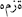
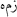
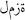
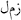
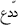

Türkçe Meali
1. Veyl olsun Hümeze ve Lümeze'ye
2. Çünkü o mal biriktirmiş ve ona odaklanmıştır
3. O malının süreklileştireceğini sanır
4. Hayır, andolsun O Hutame'ye atılacaktır
5. Bildin mi Hutame nedir ?
6. Allah'ın tutuşturulmuş ateşidir.
7. Ki o gönüllere işler,
8. Ve onların üzerine kapatılacaktır
9. Uzatılmış sütunlar/bloklar arasında
Bismillahirahmanırrahiym
Rahman ve Rahim olan Allah adına
Sure Hakkında
Humeze suresinin tamamı Mekke'de inmiştir. Bu hususta müfessirlerin icmaı vardır. Nitekim İbn Merduye'nin yaptığı rivayete göre, İbn Abbas (R.A.) şöyle demiştir: «Hümeze Sûresi Mekke'de inmiştir.»*1
Birinci âyetinde, insanı arkadan çekiştirip çamur atanlar «veyl» ile tehdît edilmekte ve bu mânaya delâlet eden «hümeze» süreye isim olmaktadır.
Allâme Zemahşerî'ye göre, bu sûre Kıyamet Sûresi'nden sonra inmiştir.*2
Âyet sayısı: 9
Kelime: 30
Harf: 130*3
SURENİN DÜŞÜNDÜRDÜKLERİ
Çünkü o mal biriktirmiş ve ona odaklanmıştır
O malının süreklileştireceğini sanır
(Humeze Suresi 2 ve 3. Ayetler)
İniş sırasına göre 32. Sure olan Humeze Suresi, Mekki surelerdendir. Kendisinden önce "Kıyamet Suresi" vahyolunmuş, sonra ise; Mürselat Suresi inzal olmuştur.
Yapısı itibari ile bu 3 sure arasında semantik bir bağ söz konusudur. Bu bağlantıyı çalışmanın ilerleyen bölümlerinde deklare edeceğim.
Humeze suresinin henüz başlangıcında yer alan bir ifade dikkate değerdir;
1.Veyl olsun humeze ve lumeze'ye
Veyl ifadesi, kişinin kendi elleriyle yapıp ettiklerine muhatap olması hasebi ile dile gelmiş bir serzeniştir. Yani, "yazıklar olsun" vurgusu yapıldığında, zaten muhataba yazık olmuş, fiilen ürettiği işin sonucuyla yüzleşmiştir.
Bu minvalde, aktif bir kavram olan "veyl", havada kalan bir serzeniş olmamakla beraber, mutlak anlamda süreklilik arz eden bir akıbetin içselleşmiş dışavurumudur.
VEYL olsun o kişilere ki, Kitap'ı kendi elleriyle yazarlar da sonra onunla basit bir karşılık satın alsınlar diye, "İşte bu, Allah katındandır!" derler. Vay haline onların, ellerinin yazdıkları yüzünden! Vay haline onların, kazanıp durdukları yüzünden! (Bakara Suresi 79. Ayet)
Veyl ölçü ve tartıda hile yapanlara! (MUTAFFİFÎN suresi 1. ayet)
Veyl o her bir vebal yüklü sahtekâra (CÂSİYE suresi 7. ayet)
Ve en ilginç veri ise "Mürselat Suresi" bünyesinde, dağınık olarak 10 kez aynı formda kullanışıdır. Bu sure ile ilgili çalışmamızda da belirttiğimiz gibi (bkz. Abdestli Kapitalizm / Ozan Yayıncılık ) sure yapı olarak, olan bir şeyi, ya da olmakta olan bir şeyi anlatmaktadır. Ve ifade (veyl), hali hazırda olmakta olana yönelik bir yaklaşımdır.
Ve hedef aldığı odak "Humeze ve Lumeze" olarak tanımlanan bir güruhtur.
Klâsik kaynaklarda el-Ahnes b. Şerîk, Velîd b. Muğîre, Umeyye b. Halef ve Cemil b. Âmir es-Sakafî gibi kişilere hitap ettiği belirtilen bu kavramların içeriğini dolduran bu kişilerin ortak özelliğine baktığımızda, bir önceki sure (Kıyamet Suresi) bünyesinde tanımlanan ortak karakterin ortaya çıktığını görürüz;
Şehvet düşkünü, malına ve mülküne güvenen, ihtiraslarına bağımlı yaşayan, gerçekleri bildiği halde gizleyen ve sürekli kendisine yontan bu karakter, yukarıda anılan isimler bünyesinde de açığa çıkmış bir karakter yapısıdır. Ancak salt anlamda bu surenin sadece bu zümreye yönelik olarak vahyedildiğini söylemek, vahyin bu anlamda ruhunu katletmeye yönelik bir söylem olacaktır. Dolayısı ile bu kavramları bağımsız bir bakış açısı ile değerlendirmek ile mükellefiz.
Hümeze ;
 – hümeze sözcüğü,  – hemz kökünden türemiş, mübalâğa abartı kalıbında bir ism-i fail "etken isim olup sıkan, kıran, men eden, ayıplayan, vuran, döven" anlamlarında kullanılır. Ama asıl anlamı, "sıkan ve sakındıran" demektir. Zaman içerisinde "arkadan kınayarak, ayıplayarak, kötüleyerek birini bir şeyden sakındıran, o kişiyi sıkıntıya sokanlar" anlamında kullanılır olmuştur.*4
Lümeze ;
 – lümeze ise "yüze karşı gizli sözle; kaş, göz, dudak hareketleri ile can sıkma, mneviyat bozma" anlamındaki  – lemz sözcüğünden türemiş bir sözcüktür. Lümeze de tıpkı hümeze gibi mübalâğa kalıbında çoğul anlamlı bir ism-i fail olup "yüze karşı mimiklerle [kaş, göz ve dudak hareketleriyle] sıkıntı verenler" anlamına gelir. *5
"Lemz" sözcüğünün türevleri;
Hucurat Suresi 11. Ey iman etmiş kimseler! Bir topluluk bir topluluğu alaya almasın. Olabilir ki, onlar [alay ettikleri topluluk] kendilerinden hayırlıdır. Kadınlar da başka kadınları alaya almasın. Belki de onlar [alay ettikleri kadınlar], kendilerinden hayırlıdır. Kendinizi de fırlatıp atmayın [ayıplamayın, küçük düşürmeyin]; birbirlerinizi lakaplar ile fırlatıp atmayın [küçük düşürmeyin, küçümsemeyin]. İmandan sonra fâsıklık ile adlanmak ne kötü şeydir! Ve kim tevbe etmezse, işte onlar zâlimlerin ta kendileridir.
Tevbe Suresi 78-79. Şüphesiz onlar; mü'minlerden, sadakalardan kendi gönülleriyle bağışta bulunanlara ve güçlerinin yettiğinden fazlasını bulamayanlara dil uzatan, sonra da onlarla alay eden kimseler, Allah'ın, onların sırlarını ve fısıltılarını bilip durduğunu ve şüphesiz Allah'ın bütün bilinmeyenlerin çok iyi bilicisi olduğunu bilmediler mi? Allah, onları maskaraya çevirmiştir. Ve onlar için çok acıklı bir azap vardır.
İlgili ayetler de göz önüne alındığında, Humeze ve Lumeze kavramları için oluşan anlam; onur kırmak, şahsiyeti inciltmek gibi algılanabilir. Ancak, gözden kaçırılmaması gereken bir durum söz konusudur;
Bu anlamı üreten psikoloji Humeze Suresi 2. Ayetinde gizlidir;
2.Çünkü o mal biriktirmiş ve ona odaklanmıştır
Humeze ve Lumeze'nin onur kırıcı tutumu, ayetteki fiile bağımlıdır. Yani, yapı itibari ile; Hemz ve Lemz edebilmek (Onur kırıp, şahsiyeti hırpalamak) için, mal biriktirmiş olmak gerekir.
Ayetteki biriktirme anlamına gelen  addede sözcüğü, biriktirmek, hazırlamak anlamına gelen ve sesteş bir sözcük olan 'udde kökünden türemiştir. İnsanların belli bir amaçla (meselâ, olası kötü hâdiselere karşı güvence olarak) bir şeyi biriktirmesi 'udde sözcüğü ile ifade edilir.*6
Anlamı itibari ile malı arttırmak, çoğaltmak manalarına gelen bu kelime bir önceki kavram "cemea" ile birlikte, arttırdıkça arttırdı ve odaklandı anlamlarına gelir.
Ve ilişkili olduğu kavram ise 3. Ayette karşımıza çıkmaktadır;
3.O malının ebedileştireceğini sanır
Humeze ve Lumezenin en tehlikeli yönü budur. Bu vurgu; huld kökünden gelen "ebedileştirmek" manasındaki; ahledehu kavramı ile yapılır. Kavramı incelediğimizde, ebedileşmek, ölümsüzleşmek manalarına geldiğini görürüz. Fakat semantik olarak suredeki kullanım biçimine bakıldığında; dışarı çıkmadan sürekli evde kalmak"*7 manasında kullanıldığını görürüz. Bu anlamın ihtiva ettiği yargı; esas olarak "ürettiği sanal tasavvura bağımlı hale gelmek, gerçeklerle yüzleştiği halde bunda ısrar etmek ve insanlığa bunu dikta etmek" manasını üretir ki, bunun günümüze ayak basışı şu misalde anlatılır;
Bir kişinin "bağlı olduğu paradigmaya" olan bağımlılığı nedeni ile oluşan bakış açısında ısrarcı olması, gerçeklerin "kendi ürettiği perspektif yönünde olmadığını tespit etmesine rağmen", içinde olduğu durumu dayatması ve dikta etmesi...
Yani başka bir deyişle, "ben olduğumdan başka bir şey değilim" şeklinde bir düşünce olduğunu söyleyebilirim. Ancak, bu görüşün, düşüncenin oluşumundaki temel gücün "mal" olduğunu söylemeliyiz. Bu minvalde, mülke egemenleşerek oluşturulan/dayatılan "koşul ve imkanlar" diyebileceğimiz bu kavramın anlaşılmasının önüne geçen bir diğer sorunsal ise, çeviri problemidir.
Çevirilerde, "ebedileştireceğini sanır" şeklinde yapılan çeviri hatalıdır. Doğrusu ise, "mülkün kendisini ebedileştirdiğini sanır" şeklinde olmalıdır.
Arada nasıl bir fark var diye düşünebilirsiniz. Ancak 2. Ayet ile ilgili bölümde verdiğim "udde" kavramının, "cemea" ile birlikte kullanımı itibari ile; hali hazırda var olan mala mal eklemek anlamı çıkacağını söylemeliyim.
Yani 2. Ayeti şu biçimde çevirdiğimizde "doğru bir çeviri olacaktır."
Çünkü o malına mal eklemiş ve ona adapte
olmuştur/tüm yaşamını buna adamıştır. (Humeze Suresi 2. Ayet)
Var olan malın üstüne mal eklemek, kenz etmek demektir.
Yani biriktirmek, biriktirme gayretinde bulunmak, ayırmak manasındadır. Dolayısı ile, hali hazırda "mala mal eklemiş birisi", ekleme sürecini yaşamış, yozlaşmış, devinime ihanet etmiş demektir. Dolayısı ile; zaten "ebedileştiği kanaati taşır".
Bu minvalde, huld'un sebebi maldır.
Yani, kişiyi başkalarına dikta ettiği tasavvura bağımlı kılan, mal hırsının ürettiği bir "elde etme sevincidir."
Ve malın hegemonyaya dönüşmesi, servetin işlerlik kazanması tutkusudur. Bunu patolojik olarak ele aldığımızda, servet ve refah için ömrünü harcamış bir bireyin, tam elde ettiği sırada, malın ve servetin değersizleşmesi, büyük bir yıkım üretecektir.
Bu bağlamda, sürekli olarak zihinleri kontrol etme; kitleleri manipüle ederek; servet ve refahın sürekli/ebedi hale gelmesi adına fiiliyat üretme hali için bu kavramı işaret gösterebiliriz.
Bu hususta meseleyi daha net algılamak için Allah elçisinin "infak tavrını" ve zıttı olan kenzi tespit etmek için Allah elçisinin mülkle kurduğu ilişkiyi iyi anlamak gerekir.
Huld kavramının işaret ettiği bir diğer anlam ise, insanın kendi kendisine yabancılaşmasıdır.
Şairin dediği gibi;
"Nedir ki, bedenin uzak düşmesi sevdiklerinden?
Ah, en büyük ıstırap uzağına düşmesi insanın kendisinden
En büyük şirk, İnsanın kendisine yabancılaşmasıymış
Ah, ben Alaka'sını kaybetmişken, neyi okuyayım ve kimin adıyla?"*8
Huld kavramının bizlere gösterdiği bu karakteristik sorunsalı teşhis ederken, insanın kendisine yabancılaşması, tabirini kullanırken sonuna şunu eklemek gerekir; "dolayısı ile topluma uzaklaşması."
Yukarıda da belirttiğim gibi, Nefs'i Vahide'den kopmak sureti ile, "Ben, ancak kendime ait olanlar ile varım" düşüncesinin beslediği "yapay benliğin hegemonyasına" entegre olmaktır.
Bu hegemonya, şirkin başlangıç ilkesi olan; malda ve mülkte ortaklık ilkesinin ihlaline neden olan bir ihtiras üretmekle beraber, Ümmet'i Vahide'nin yıkılış nedenidir.
Ki yaratılış sahnesinde de bunu net olarak görebiliriz;
(TÂHÂ suresi 120. ayet) Fe vesvese ileyhiş şeytanü kale ya ademü hel edüllüke ala şeceratil huldi ve mülkil la yebla
(TÂHÂ suresi 120. ayet) Ancak şeytan, Ey adem; sana ebedilik/huld ağacını yani güçlü ve yıkılmaz bir mülkü, iktidarı göstereyim mi ?
Kuran'da bu tip ayetlerde kullanılan "ve" bağlacının kattığı anlam şu şekildedir; huld ağacını ve/"yani" yıkılmaz mülkü.
Ve bağlacı, bir önceki kavramla bir sonraki kavramı aynileştirmek için kullanılmaktadır. Dolayısı ile bu noktada "ebedileştirme ağacı, mülk ve mülke egemenleşerek elde edilen iktidardır."
Bu bağlamda huld, mülk ve mülke egemenleşerek elde edilen iktidar ve bu iktidarın ürettiği algıya bağımlılıktır.
Buraya kadar ki bölümde genel olarak Kuran'ın kendi iç dinamikleri çerçevesinden baktığımızda şöyle bir anlam bütünlüğü ortaya çıkmaktadır;
Edindiği malın ürettiği tahakküme esir olanlar, mal ve servet sevdasıyla iş üretenler, servetini arttırma yarışına giren ve bireysel zenginliği toplumsal zenginliğin üstünde tutanlar, insanların fakirleşmesine yol açarak onların onurlarını kırmaktadırlar. Bu zümreler, ürettikleri bu fiiller yüzünden kendilerinde de yazık etmektedirler. Çünkü ürettikleri toplum algısı acımasızdır ve bu acımasızlık kendileri için de geçerlidir.
Mal ve servet sevdasıyla iş üretmenin adı "Melikleşme temayülüdür." Melik; mülke egemenleşerek, iktidara egemenleşen manasındadır. Ama mal ve mülk bu noktada sadece bir araçtır.
Günümüze getirdiğimizde; onur kırıcı bu eylemin en büyük alamet'i farikası, bir babanın hasta evladına ilaç alamamasıdır.
İşte bu nokta, Kuran'ın bizi taşıdığı olağanüstü hayati bir nokta olmakla beraber, anlaşılmadığı taktirde "din yıkılır."
Din, yeryüzü ile irtibatı kesildiği an yıkılmış demektir. Ali Şeriati'nin güzel bir sözünü hatırlayarak devam edebiliriz;
Socrates Felsefeyi, Hz.Muhammed dini yeryüzüne indirmiştir..!
Bu, bizim de tasdik ettiğimiz, antropolojik bir okumanın ürünüdür. Patolojik tespitlerin antropolojik çözümler ile tedavi edildiği bir gerçekliğin bahrından kopmuştur.
Hatta bir adım daha ileri gitmek gerekirse şunu dillendirmek gerekir;
Kuran'ın miskin dediği unsur, aç-yoksul olmaktan ziyade; bu duruma isyan edemeyen, afyonlanmış manasında kullanılmaktadır. Yani, göklere entegre edilmiş bir din algısının müptelası olmak sureti ile içine düşülen duruma işaret eden bu derin kavram, bugün insanlığın genel halini özetlemeye yetmektedir.
Bu minvalde hakikatin farkındalığına erişmek sureti ile gelişecek aydınlanma, bizim meşhur aydınlanmacılarımızın ürettiği saçmalık yığınının üstünden geçecektir.
İslam'ın başlangıç noktası "Lamekan sırrına vakıf olmakta" gizlidir.
La'mekan, mekansız manasına gelir. Allah, zati olarak "Lamekandır." Yani hiçbir mekana ve zamana izafe edilemez. Dolayısı ile O'nun sıfatları da mekansızdır. Sahip oldukları da mekansızdır.
Çünkü mantıksal olarak; mekansız olanın mekanlı bir sıfat taşıması "tevhidi olmaz." Bu bağlamda, O'nu temsil eden sıfatlar, özellikler tekelleştirilemez.
Mekan, İngilizcede locality olarak geçen, bulunulan yer manasında bir kavramdır. Bir şeyin tespiti babında sınırlandığı yer, noktadır.
Bu minvalde, Allah'a ait bir sıfatın, belli bir zümreye aitleşmesi, onun mekansallaşması manasına gelir ki, bu tevhid ilkesine aykırıdır.
Dolayısı ile, Kuran'da zikredilen ve insana has kılınan "Esmaül hüsna" mutlak anlamda kimsenin karakterine indirgenemeyeceği gibi, kimseden de soyutlanamaz.
İşte bu perspektif üzre gelişecek ahlaki bakış açısı; tüm insanlığı bir nazarda görme ilkesinin yaşama geçmesine neden olacaktır ki, nefsi vahide'nin giriş kapısı buradadır.
Dolayısı ile Allah'ın sahiplendiği her hangi bir unsurunda tekelleşmesi imkansızlaşmıştır.
Ve ayetler yoluyla anlatılan esas mesele şudur;
Allah insanlığa mülkünü sunmuştur. İnsanlık bu mülkü Allah'a iade etmek zorundadır. Bunu yapmanın yolu da, fakir ve miskinlere vermektir.
Geldiğimiz noktaya kadar, humeze ve lumezenin ürettiği yıkımın nedenini "mal kenz etmek" olarak tanımlayan vahyin ürettiği çift kutuplu bakış açısı üzerinde durmaya çalıştık.
Çift kutuptan kastımız, bu fiili üretenlerin kimliği ve oluşan etki noktasındadır.
Humeze ve Lumeze, açlığın, fakirliğin nedenidir. Bunu illaki mal biriktirerek yapmak durumunda değildir. Kapitalizme uşaklık ederek, Kapitalizmin bölgede güç haline gelmesini sağlamak, humezeleşme ve lumezeleşme temayülüdür..
Dolayısı ile, bugün "liberal çevrelerle işbirliği yapan", küresel kapitalizme boyun eğen, kapitalizmin yarattığı çelişkileri halka dayatan zihin, ve bu zihni oyları ile yücelten "sürü", humeze ve lumezedir.
Humeze ve Lumeze'ye, azap öngören bu kitap hatalarından döndükleri taktirde ; aynı şekilde şunu da belirtmektedir;
(NİSA suresi 99. ayet) Bunların, Allah tarafından affedilmeleri umulur. Allah affedicidir, günahları bağışlayıcıdır.